Chapter 9: Cell Communication¶
Introduction¶
Imagine what life would be like if you and the people around you could not communicate. You would not be able to express your wishes to others, nor could you ask questions about your location. Social organization is dependent on communication between the individuals that comprise that society; without communication, society would fall apart.
As with people, it is vital for individual cells to be able to interact with their environment. This is true for both a one-celled organism growing in a puddle and a large animal living on a savanna. In order to properly respond to external stimuli, cells have developed complex mechanisms of communication that can receive a message, transfer the information across the plasma membrane, and then produce changes within the cell in response to the message.
In multicellular organisms, cells send and receive chemical messages constantly to coordinate the actions of distant organs, tissues, and cells. The ability to send messages quickly and efficiently enables cells to coordinate and fine-tune their functions.
While the necessity for cellular communication in larger organisms seems obvious, even single-celled organisms communicate with each other. Yeast cells signal each other to aid in finding other yeast cells for reproduction. Some forms of bacteria coordinate their actions in order to form large complexes called biofilms or to organize the production of toxins to remove competing organisms. The ability of cells to communicate through chemical signals originated in single cells and was essential for the evolution of multicellular organisms. The efficient and relatively error-free function of communication systems is vital for all life as we know it.
9.1 Signaling Molecules and Cellular Receptors¶
Learning Objectives
By the end of this section, you will be able to do the following:
- Describe four types of signaling mechanisms found in multicellular organisms
- Compare internal receptors with cell-surface receptors
- Recognize the relationship between a ligand’s structure and its mechanism of action
There are two kinds of communication in the world of living cells. Communication between cells is called intercellular signaling, and communication within a cell is called intracellular signaling. An easy way to remember the distinction is by understanding the Latin origin of the prefixes: inter- means "between" (for example, intersecting lines are those that cross each other) and intra- means "inside" (as in intravenous).
Chemical signals are released by signaling cells in the form of small, usually volatile or soluble molecules called ligands. A ligand is a molecule that binds another specific molecule, in some cases, delivering a signal in the process. Ligands can thus be thought of as signaling molecules. Ligands interact with proteins in target cells, which are cells that are affected by chemical signals; these proteins are also called receptors. Ligands and receptors exist in several varieties; however, a specific ligand will have a specific receptor that typically binds only that ligand.
Forms of Signaling¶
There are four categories of chemical signaling found in multicellular organisms: paracrine signaling, endocrine signaling, autocrine signaling, and direct signaling across gap junctions (Figure 9.2). The main difference between the different categories of signaling is the distance that the signal travels through the organism to reach the target cell. We should note here that not all cells are affected by the same signals.
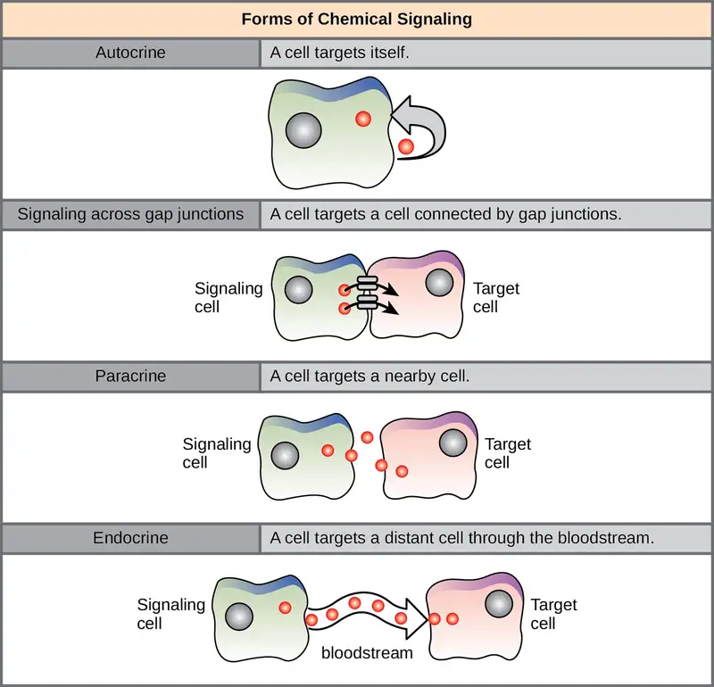
Paracrine Signaling¶
Signals that act locally between cells that are close together are called paracrine signals. Paracrine signals move by diffusion through the extracellular matrix. These types of signals usually elicit quick responses that last only a short period of time. In order to keep the response localized, paracrine ligand molecules are normally quickly degraded by enzymes or removed by neighboring cells. Removing the signals will reestablish the concentration gradient for the signal, allowing them to quickly diffuse through the intracellular space if released again.
One example of paracrine signaling is the transfer of signals across synapses between nerve cells. A nerve cell consists of a cell body, several short, branched extensions called dendrites that receive stimuli, and a long extension called an axon, which transmits signals to other nerve cells or muscle cells. The junction between nerve cells where signal transmission occurs is called a synapse. A synaptic signal is a chemical signal that travels between nerve cells. Signals within the nerve cells are propagated by fast-moving electrical impulses. When these impulses reach the end of the axon, the signal continues on to a dendrite of the next cell by the release of chemical ligands called neurotransmitters from the presynaptic cell (the cell emitting the signal). The neurotransmitters are transported across the very small distances (20–40 nanometers) between nerve cells, which are called chemical synapses (Figure 9.3). The small distance between nerve cells allows the signal to travel quickly; this enables an immediate response, such as, "Take your hand off the stove!"
When the neurotransmitter binds the receptor on the surface of the postsynaptic cell, the electrochemical potential of the target cell changes, and the next electrical impulse is launched. The neurotransmitters that are released into the chemical synapse are degraded quickly or get reabsorbed by the presynaptic cell so that the recipient nerve cell can recover quickly and be prepared to respond rapidly to the next synaptic signal.
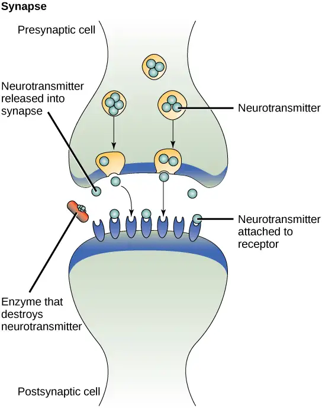
Endocrine Signaling¶
Signals from distant cells are called endocrine signals, and they originate from endocrine cells. (In the body, many endocrine cells are located in endocrine glands, such as the thyroid gland, the hypothalamus, and the pituitary gland.) These types of signals usually produce a slower response but have a longer-lasting effect. The ligands released in endocrine signaling are called hormones, signaling molecules that are produced in one part of the body but affect other body regions some distance away.
Hormones travel the large distances between endocrine cells and their target cells via the bloodstream, which is a relatively slow way to move throughout the body. Because of their form of transport, hormones become diluted and are present in low concentrations when they act on their target cells. This is different from paracrine signaling, in which local concentrations of ligands can be very high.
Autocrine Signaling¶
Autocrine signals are produced by signaling cells that can also bind to the ligand that is released. This means the signaling cell and the target cell can be the same or a similar cell (the prefix auto- means self, a reminder that the signaling cell sends a signal to itself). This type of signaling often occurs during the early development of an organism to ensure that cells develop into the correct tissues and take on the proper function. Autocrine signaling also regulates pain sensation and inflammatory responses. Further, if a cell is infected with a virus, the cell can signal itself to undergo programmed cell death, killing the virus in the process. In some cases, neighboring cells of the same type are also influenced by the released ligand. In embryological development, this process of stimulating a group of neighboring cells may help to direct the differentiation of identical cells into the same cell type, thus ensuring the proper developmental outcome.
Direct Signaling Across Gap Junctions¶
Gap junctions in animals and plasmodesmata in plants are connections between the plasma membranes of neighboring cells. These fluid-filled channels allow small signaling molecules, called intracellular mediators, to diffuse between the two cells. Small molecules or ions, such as calcium ions (Ca2+), are able to move between cells, but large molecules like proteins and DNA cannot fit through the channels. The specificity of the channels ensures that the cells remain independent but can quickly and easily transmit signals. The transfer of signaling molecules communicates the current state of the cell that is directly next to the target cell; this allows a group of cells to coordinate their response to a signal that only one of them may have received. In plants, plasmodesmata are ubiquitous, making the entire plant into a giant communication network.
Types of Receptors¶
Receptors are protein molecules in the target cell or on its surface that bind ligand. There are two types of receptors, internal receptors and cell-surface receptors.
Internal receptors¶
Internal receptors, also known as intracellular or cytoplasmic receptors, are found in the cytoplasm of the cell and respond to hydrophobic ligand molecules that are able to travel across the plasma membrane. Once inside the cell, many of these molecules bind to proteins that act as regulators of mRNA synthesis (transcription) to mediate gene expression. Gene expression is the cellular process of transforming the information in a cell's DNA into a sequence of amino acids, which ultimately forms a protein. When the ligand binds to the internal receptor, a conformational change is triggered that exposes a DNA-binding site on the protein. The ligand-receptor complex moves into the nucleus, then binds to specific regulatory regions of the chromosomal DNA and promotes the initiation of transcription (Figure 9.4). Transcription is the process of copying the information in a cell's DNA into a special form of RNA called messenger RNA (mRNA); the cell uses information in the mRNA (which moves out into the cytoplasm and associates with ribosomes) to link specific amino acids in the correct order, producing a protein. Internal receptors can directly influence gene expression without having to pass the signal on to other receptors or messengers.
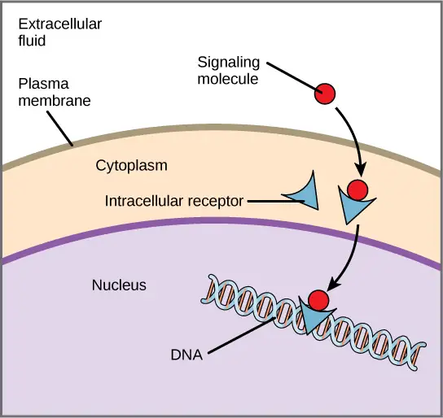
Cell-Surface Receptors¶
Cell-surface receptors, also known as transmembrane receptors, are cell surface, membrane-anchored (integral) proteins that bind to external ligand molecules. This type of receptor spans the plasma membrane and performs signal transduction, through which an extracellular signal is converted into an intracellular signal. Ligands that interact with cell-surface receptors do not have to enter the cell that they affect. Cell-surface receptors are also called cell-specific proteins or markers because they are specific to individual cell types.
Because cell-surface receptor proteins are fundamental to normal cell functioning, it should come as no surprise that a malfunction in any one of these proteins could have severe consequences. Errors in the protein structures of certain receptor molecules have been shown to play a role in hypertension (high blood pressure), asthma, heart disease, and cancer.
Each cell-surface receptor has three main components: an external ligand-binding domain called the extracellular domain, a hydrophobic membrane-spanning region called a transmembrane domain, and an intracellular domain inside the cell. The size and extent of each of these domains vary widely, depending on the type of receptor.
Evolution Connection: How Viruses Recognize a Host
Unlike living cells, many viruses do not have a plasma membrane or any of the structures necessary to sustain metabolic life. Some viruses are simply composed of an inert protein shell enclosing DNA or RNA. To reproduce, viruses must invade a living cell, which serves as a host, and then take over the hosts cellular apparatus. But how does a virus recognize its host?
Viruses often bind to cell-surface receptors on the host cell. For example, the virus that causes human influenza (flu) binds specifically to receptors on membranes of cells of the respiratory system. Chemical differences in the cell-surface receptors among hosts mean that a virus that infects a specific species (for example, humans) often cannot infect another species (for example, chickens).
However, viruses have very small amounts of DNA or RNA compared to humans, and, as a result, viral reproduction can occur rapidly. Viral reproduction invariably produces errors that can lead to changes in newly produced viruses; these changes mean that the viral proteins that interact with cell-surface receptors may evolve in such a way that they can bind to receptors in a new host. Such changes happen randomly and quite often in the reproductive cycle of a virus, but the changes only matter if a virus with new binding properties comes into contact with a suitable host. In the case of influenza, this situation can occur in settings where animals and people are in close contact, such as poultry and swine farms.1 Once a virus jumps the former "species barrier" to a new host, it can spread quickly. Scientists watch newly appearing viruses (called emerging viruses) closely in the hope that such monitoring can reduce the likelihood of global viral epidemics.
Cell-surface receptors are involved in most of the signaling in multicellular organisms. There are three general categories of cell-surface receptors: ion channel-linked receptors, G-protein-linked receptors, and enzyme-linked receptors.
Ion channel-linked receptors bind a ligand and open a channel through the membrane that allows specific ions to pass through. To form a channel, this type of cell-surface receptor has an extensive membrane-spanning region. In order to interact with the double layer of phospholipid fatty acid tails that form the center of the plasma membrane, many of the amino acids in the membrane-spanning region are hydrophobic in nature. Conversely, the amino acids that line the inside of the channel are hydrophilic to allow for the passage of water or ions. When a ligand binds to the extracellular region of the channel, there is a conformational change in the protein's structure that allows ions such as sodium, calcium, magnesium, and hydrogen to pass through (Figure 9.5).
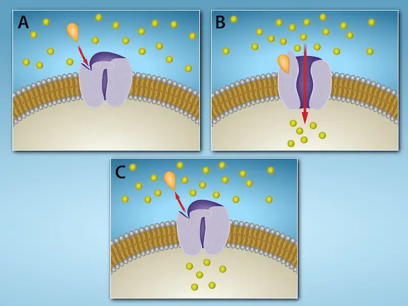
G-protein-linked receptors bind a ligand and activate a membrane protein called a G-protein. The activated G-protein then interacts with either an ion channel or an enzyme in the membrane (Figure 9.6). All G-protein-linked receptors have seven transmembrane domains, but each receptor has its own specific extracellular domain and G-protein-binding site.
Cell signaling using G-protein-linked receptors occurs as a cyclic series of events. Before the ligand binds, the inactive G-protein can bind to a site on the receptor specific for its binding. Once the ligand binds to the receptor, the resulting change in shape activates the G-protein, which releases guanosine diphosphate (GDP) and picks up guanosine 3-phosphate (GTP). The subunits of the G-protein then split into the α subunit and the βγ subunit. One or both of these G-protein fragments may be able to activate other proteins as a result. After awhile, the GTP on the active α subunit of the G-protein is hydrolyzed to GDP and the βγ subunit is deactivated. The subunits reassociate to form the inactive G-protein and the cycle begins anew.

G-protein-linked receptors have been extensively studied and much has been learned about their roles in maintaining health. Bacteria that are pathogenic to humans can release poisons that interrupt specific G-protein-linked receptor function, leading to illnesses such as pertussis, botulism, and cholera. In cholera (Figure 9.7), for example, the water-borne bacterium Vibrio cholerae produces a toxin, choleragen, that binds to cells lining the small intestine. The toxin then enters these intestinal cells, where it modifies a G-protein that controls the opening of a chloride channel and causes it to remain continuously active, resulting in large losses of fluids from the body and potentially fatal dehydration as a result.
Enzyme-linked receptors are cell-surface receptors with intracellular domains that are associated with an enzyme. In some cases, the intracellular domain of the receptor itself is an enzyme. Other enzyme-linked receptors have a small intracellular domain that interacts directly with an enzyme. The enzyme-linked receptors normally have large extracellular and intracellular domains, but the membrane-spanning region consists of a single alpha-helical region of the peptide strand. When a ligand binds to the extracellular domain, a signal is transferred through the membrane, activating the enzyme. Activation of the enzyme sets off a chain of events within the cell that eventually leads to a response. One example of this type of enzyme-linked receptor is the tyrosine kinase receptor (Figure 9.8). A kinase is an enzyme that transfers phosphate groups from ATP to another protein. The tyrosine kinase receptor transfers phosphate groups to tyrosine molecules (tyrosine residues). First, signaling molecules bind to the extracellular domain of two nearby tyrosine kinase receptors. The two neighboring receptors then bond together, or dimerize. Phosphates are then added to tyrosine residues on the intracellular domain of the receptors (phosphorylation). The phosphorylated residues can then transmit the signal to the next messenger within the cytoplasm.
Visual Connection
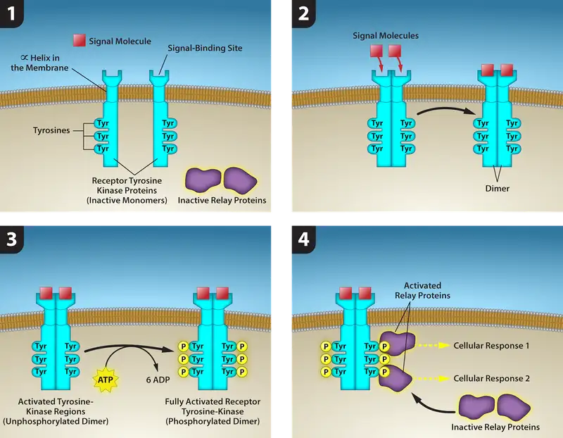
HER2 is a receptor tyrosine kinase. In 30 percent of human breast cancers, HER2 is permanently activated, resulting in unregulated cell division. Lapatinib, a drug used to treat breast cancer, inhibits HER2 receptor tyrosine kinase autophosphorylation (the process by which the receptor adds phosphates onto itself), thus reducing tumor growth by 50 percent. Besides autophosphorylation, which of the following steps would be inhibited by Lapatinib?
- Signaling molecule binding, dimerization, and the downstream cellular response
- Dimerization, and the downstream cellular response
- The downstream cellular response
- Phosphatase activity, dimerization, and the downsteam cellular response
Signaling Molecules¶
Produced by signaling cells and the subsequent binding to receptors in target cells, ligands act as chemical signals that travel to the target cells to coordinate responses. The types of molecules that serve as ligands are incredibly varied and range from small proteins to small ions like calcium (Ca2+).
Small Hydrophobic Ligands¶
Small hydrophobic ligands can directly diffuse through the plasma membrane and interact with internal receptors. Important members of this class of ligands are the steroid hormones. Steroids are lipids that have a hydrocarbon skeleton with four fused rings; different steroids have different functional groups attached to the carbon skeleton. Steroid hormones include the female sex hormone, estradiol, which is a type of estrogen; the male sex hormone, testosterone; and cholesterol, which is an important structural component of biological membranes and a precursor of steroid hormones (Figure 9.9). Other hydrophobic hormones include thyroid hormones and vitamin D. In order to be soluble in blood, hydrophobic ligands must bind to carrier proteins while they are being transported through the bloodstream.
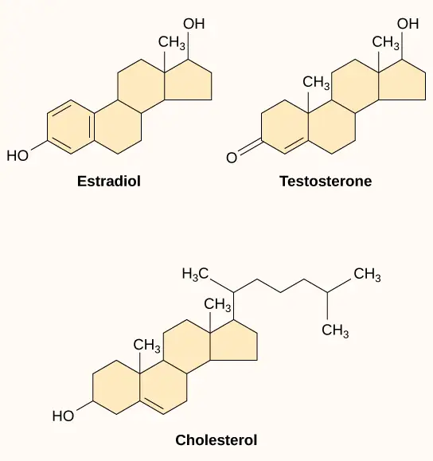
Water-Soluble Ligands¶
Water-soluble ligands are polar and, therefore, cannot pass through the plasma membrane unaided; sometimes, they are too large to pass through the membrane at all. Instead, most water-soluble ligands bind to the extracellular domain of cell-surface receptors. This group of ligands is quite diverse and includes small molecules, peptides, and proteins.
Other Ligands¶
Nitric oxide (NO) is a gas that also acts as a ligand. It is able to diffuse directly across the plasma membrane, and one of its roles is to interact with receptors in smooth muscle and induce relaxation of the tissue. NO has a very short half-life and, therefore, only functions over short distances. Nitroglycerin, a treatment for heart disease, acts by triggering the release of NO, which causes blood vessels to dilate (expand), thus restoring blood flow to the heart. NO has become better known recently because the pathway that it affects is targeted by prescription medications for erectile dysfunction, such as Viagra (erection involves dilated blood vessels).
9.2 Propagation of the Signal¶
Learning Objectives
By the end of this section, you will be able to do the following:
- Explain how the binding of a ligand initiates signal transduction throughout a cell
- Recognize the role of phosphorylation in the transmission of intracellular signals
- Evaluate the role of second messengers in signal transmission
Once a ligand binds to a receptor, the signal is transmitted through the membrane and into the cytoplasm. Continuation of a signal in this manner is called signal transduction. Signal transduction only occurs with cell-surface receptors, which cannot interact with most components of the cell such as DNA. Only internal receptors are able to interact directly with DNA in the nucleus to initiate protein synthesis.
When a ligand binds to its receptor, conformational changes occur that affect the receptor’s intracellular domain. Conformational changes of the extracellular domain upon ligand binding can propagate through the membrane region of the receptor and lead to activation of the intracellular domain or its associated proteins. In some cases, binding of the ligand causes dimerization of the receptor, which means that two receptors bind to each other to form a stable complex called a dimer. A dimer is a chemical compound formed when two molecules (often identical) join together. The binding of the receptors in this manner enables their intracellular domains to come into close contact and activate each other.
Binding Initiates a Signaling Pathway¶
After the ligand binds to the cell-surface receptor, the activation of the receptor’s intracellular components sets off a chain of events that is called a signaling pathway, sometimes called a signaling cascade. In a signaling pathway, second messengers–enzymes–and activated proteins interact with specific proteins, which are in turn activated in a chain reaction that eventually leads to a change in the cell’s environment (Figure 9.10), such as an increase in metabolism or specific gene expression. The events in the cascade occur in a series, much like a current flows in a river. Interactions that occur before a certain point are defined as upstream events, and events after that point are called downstream events.
Visual Connection
![This illustration shows the epidermal growth factor receptor, which is embedded in the plasma membrane. Upon binding of a signaling molecule to the receptor's extracellular domain, the receptor dimerizes, and intracellular residues are phosphorylated. Phosphorylation of the receptor triggers the phosphorylation of a protein called M E K by R A F. M E K, in turn, phosphorylates E R K. E R K stimulates protein translation in the cytoplasm, and transcription in the nucleus. Activation of E R K stimulates cell proliferation, cell migration and adhesion, and angiogenesis, which is the growth of new blood vessels. E R K inhibits apoptosis.](img/figure-09-02-01.webp)
In certain cancers, the GTPase activity of the RAS G-protein is inhibited. This means that the RAS protein can no longer hydrolyze GTP into GDP. What effect would this have on downstream cellular events?
You can see that signaling pathways can get very complicated very quickly because most cellular proteins can affect different downstream events, depending on the conditions within the cell. A single pathway can branch off toward different endpoints based on the interplay between two or more signaling pathways, and the same ligands are often used to initiate different signals in different cell types. This variation in response is due to differences in protein expression in different cell types. Another complicating element is signal integration of the pathways, in which signals from two or more different cell-surface receptors merge to activate the same response in the cell. This process can ensure that multiple external requirements are met before a cell commits to a specific response.
The effects of extracellular signals can also be amplified by enzymatic cascades. At the initiation of the signal, a single ligand binds to a single receptor. However, activation of a receptor-linked enzyme can activate many copies of a component of the signaling cascade, which amplifies the signal.
Interactive
Observe an animation of cell signaling at this site.
Methods of Intracellular Signaling¶
The induction of a signaling pathway depends on the modification of a cellular component by an enzyme. There are numerous enzymatic modifications that can occur, and they are recognized in turn by the next component downstream. The following are some of the more common events in intracellular signaling.
Phosphorylation¶
One of the most common chemical modifications that occurs in signaling pathways is the addition of a phosphate group (PO4–3) to a molecule such as a protein in a process called phosphorylation. The phosphate can be added to a nucleotide such as GMP to form GDP or GTP. Phosphates are also often added to serine, threonine, and tyrosine residues of proteins, where they replace the hydroxyl group of the amino acid (Figure 9.11). The transfer of the phosphate is catalyzed by an enzyme called a kinase. Various kinases are named for the substrate they phosphorylate. Phosphorylation of serine and threonine residues often activates enzymes. Phosphorylation of tyrosine residues can either affect the activity of an enzyme or create a binding site that interacts with downstream components in the signaling cascade. Phosphorylation may activate or inactivate enzymes, and the reversal of phosphorylation, dephosphorylation by a phosphatase, will reverse the effect.
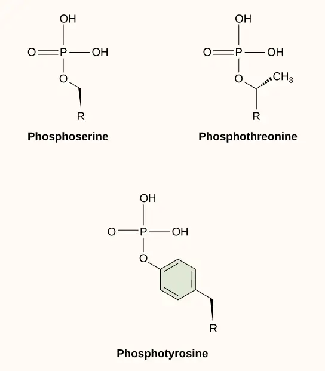
Second Messengers¶
Second messengers are small molecules that propagate a signal after it has been initiated by the binding of the signaling molecule to the receptor. These molecules help to spread a signal through the cytoplasm by altering the behavior of certain cellular proteins.
Calcium ion is a widely used second messenger. The free concentration of calcium ions (Ca2+) within a cell is very low because ion pumps in the plasma membrane continuously remove it by using adenosine-5'-triphosphate (ATP). For signaling purposes, Ca2+ is stored in cytoplasmic vesicles, such as the endoplasmic reticulum, or accessed from outside the cell. When signaling occurs, ligand-gated calcium ion channels allow the higher levels of Ca2+ that are present outside the cell (or in intracellular storage compartments) to flow into the cytoplasm, which raises the concentration of cytoplasmic Ca2+. The response to the increase in Ca2+ varies and depends on the cell type involved. For example, in the β-cells of the pancreas, Ca2+ signaling leads to the release of insulin, and in muscle cells, an increase in Ca2+ leads to muscle contractions.
Another second messenger utilized in many different cell types is cyclic AMP (cAMP). Cyclic AMP is synthesized by the enzyme adenylyl cyclase from ATP (Figure 9.12). The main role of cAMP in cells is to bind to and activate an enzyme called cAMP-dependent kinase (A-kinase). A-kinase regulates many vital metabolic pathways: It phosphorylates serine and threonine residues of its target proteins, activating them in the process. A-kinase is found in many different types of cells, and the target proteins in each kind of cell are different. Differences give rise to the variation of the responses to cAMP in different cells.
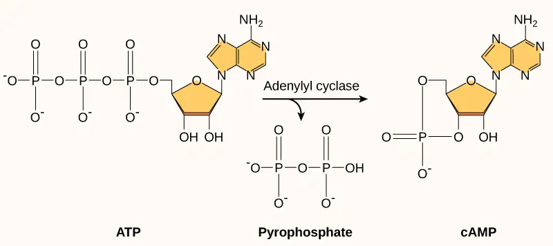
Present in small concentrations in the plasma membrane, inositol phospholipids are lipids that can also be converted into second messengers. Because these molecules are membrane components, they are located near membrane-bound receptors and can easily interact with them. Phosphatidylinositol (PI) is the main phospholipid that plays a role in cellular signaling. Enzymes known as kinases phosphorylate PI to form PI-phosphate (PIP) and PI-bisphosphate (PIP2).
The enzyme phospholipase C cleaves PIP2 to form diacylglycerol (DAG) and inositol triphosphate (IP3) (Figure 9.13). These products of the cleavage of PIP2 serve as second messengers. Diacylglycerol (DAG) remains in the plasma membrane and activates protein kinase C (PKC), which then phosphorylates serine and threonine residues in its target proteins. IP3 diffuses into the cytoplasm and binds to ligand-gated calcium channels in the endoplasmic reticulum to release Ca2+ that continues the signal cascade.
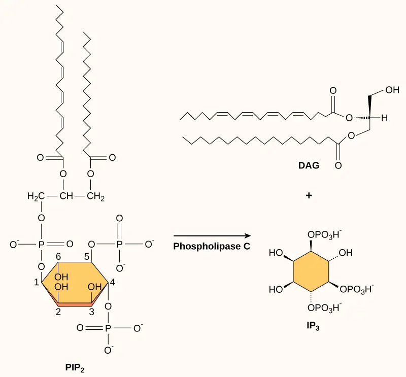
9.3 Response to the Signal¶
Learning Objectives
By the end of this section, you will be able to do the following:
- Describe how signaling pathways direct protein expression, cellular metabolism, and cell growth
- Identify the function of PKC in signal transduction pathways
- Recognize the role of apoptosis in the development and maintenance of a healthy organism
Inside the cell, ligands bind to their internal receptors, allowing them to directly affect the cell’s DNA and protein-producing machinery. Using signal transduction pathways, receptors in the plasma membrane produce a variety of effects on the cell. The results of signaling pathways are extremely varied and depend on the type of cell involved as well as the external and internal conditions. A small sampling of responses is described below.
Gene Expression¶
Some signal transduction pathways regulate the transcription of RNA. Others regulate the translation of proteins from mRNA. An example of a protein that regulates translation in the nucleus is the MAP kinase ERK. The MAPK/ERK pathway (also known as the Ras-Raf-MEK-ERK pathway) is a chain of proteins in the cell that communicates a signal from a receptor on the surface of the cell to the nuclear DNA. ERK is activated in a phosphorylation cascade when epidermal growth factor (EGF) binds the EGF receptor (see Figure 9.10). Upon phosphorylation, ERK enters the nucleus and activates a protein kinase that, in turn, regulates protein translation (Figure 9.14).
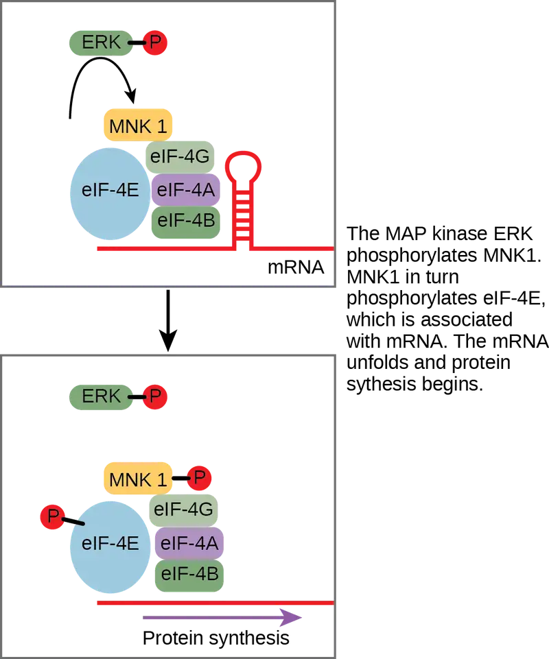
Another mechanism of gene regulation involves PKC, which is a protein that acts as an inhibitor. An inhibitor is a molecule that binds to a protein and prevents it from functioning or reduces its function. In this case, the inhibitor is a protein called Iκ-B, which binds to the regulatory protein NF-κB. (The symbol κ represents the Greek letter kappa.) When Iκ-B is bound to NF-κB, the complex cannot enter the nucleus of the cell, but when Iκ-B is phosphorylated by PKC, it can no longer bind NF-κB, and NF-κB (a transcription factor) can enter the nucleus and initiate RNA transcription. In this case, the effect of phosphorylation is to inactivate an inhibitor and thereby activate the process of transcription.
Increase in Cellular Metabolism¶
The result of another signaling pathway affects muscle cells. The activation of β-adrenergic receptors in muscle cells by adrenaline leads to an increase in cyclic AMP (cAMP) inside the cell. Also known as epinephrine, adrenaline is a hormone (produced by the adrenal gland located on top of the kidney) that readies the body for short-term emergencies. Cyclic AMP activates PKA (protein kinase A), which in turn phosphorylates two enzymes. The first enzyme promotes the degradation of glycogen by activating intermediate glycogen phosphorylase kinase (GPK) that in turn activates glycogen phosphorylase (GP) that catabolizes glycogen into its constituent glucose monomers. (Recall that your body converts excess glucose to glycogen for short-term storage. When energy is needed, glycogen is quickly reconverted to glucose.) Phosphorylation of the second enzyme, glycogen synthase (GS), inhibits its ability to form glycogen from glucose. In this manner, a muscle cell obtains a ready pool of glucose by activating its formation via glycogen degradation and by inhibiting the use of glucose to form glycogen, thus preventing a futile cycle of glycogen degradation and synthesis. The glucose is then available for use by the muscle cell in response to a sudden surge of adrenaline—the “fight or flight” reflex.
Cell Growth¶
Cell signaling pathways also play a major role in cell division. Cells do not normally divide unless they are stimulated by signals from other cells. The ligands that promote cell growth are called growth factors. Most growth factors bind to cell-surface receptors that are linked to tyrosine kinases. These cell-surface receptors are called receptor tyrosine kinases (RTKs). Activation of RTKs initiates a signaling pathway that includes a G-protein called RAS, which activates the MAP kinase pathway described earlier. The enzyme MAP kinase then stimulates the expression of proteins that interact with other cellular components to initiate cell division.
Career Connection: Cancer Biologist
Cancer biologists study the molecular origins of cancer with the goal of developing new prevention methods and treatment strategies that will inhibit the growth of tumors without harming the normal cells of the body. As mentioned earlier, signaling pathways control cell growth. These signaling pathways are controlled by signaling proteins, which are, in turn, expressed by genes. Mutations in these genes can result in malfunctioning signaling proteins. This prevents the cell from regulating its cell cycle, triggering unrestricted cell division and perhaps cancer. The genes that regulate the signaling proteins are one type of oncogene, which is a gene that has the potential to cause cancer. The gene encoding RAS is an oncogene that was originally discovered when mutations in the RAS protein were linked to cancer. Further studies have indicated that 30 percent of cancer cells have a mutation in the RAS gene that leads to uncontrolled growth. If left unchecked, uncontrolled cell division can lead to tumor formation and metastasis, the growth of cancer cells in new locations in the body.
Cancer biologists have been able to identify many other oncogenes that contribute to the development of cancer. For example, HER2 is a cell-surface receptor that is present in excessive amounts in 20 percent of human breast cancers. Cancer biologists realized that gene duplication led to HER2 overexpression in 25 percent of breast cancer patients and developed a drug called Herceptin (trastuzumab). Herceptin is a monoclonal antibody that targets HER2 for removal by the immune system. Herceptin therapy helps to control signaling through HER2. The use of Herceptin in combination with chemotherapy has helped to increase the overall survival rate of patients with metastatic breast cancer.
More information on cancer biology research can be found at the National Cancer Institute website (https://www.cancer.gov/research/areas/biology).
Cell Death¶
When a cell is damaged, superfluous, or potentially dangerous to an organism, a cell can initiate a mechanism to trigger programmed cell death, or apoptosis. Apoptosis allows a cell to die in a controlled manner that prevents the release of potentially damaging molecules from inside the cell. There are many internal checkpoints that monitor a cell’s health; if abnormalities are observed, a cell can spontaneously initiate the process of apoptosis. However, in some cases, such as a viral infection or uncontrolled cell division due to cancer, the cell’s normal checks and balances fail. External signaling can also initiate apoptosis. For example, most normal animal cells have receptors that interact with the extracellular matrix, a network of glycoproteins that provides structural support for cells in an organism. The binding of cellular receptors to the extracellular matrix initiates a signaling cascade within the cell. However, if the cell moves away from the extracellular matrix, the signaling ceases, and the cell undergoes apoptosis. This system keeps cells from traveling through the body and proliferating out of control, as happens with tumor cells that metastasize.
Another example of external signaling that leads to apoptosis occurs in T-cell development. T-cells are immune cells that bind to foreign macromolecules and particles, and target them for destruction by the immune system. Normally, T-cells do not target “self” proteins (those of their own organism), a process that can lead to autoimmune diseases. In order to develop the ability to discriminate between self and non-self, immature T-cells undergo screening to determine whether they bind to so-called self proteins. If the receptor of the immature T-cell binds to self proteins, the T-cell undergoes apoptosis and removes the potentially dangerous cell.
Apoptosis is also essential for normal embryological development. In vertebrates, for example, early stages of development include the formation of web-like tissue between individual fingers and toes (Figure 9.15). During the course of normal development, these unneeded cells must be eliminated, enabling fully separated fingers and toes to form. A cell signaling mechanism triggers apoptosis, which destroys the cells between the developing digits.
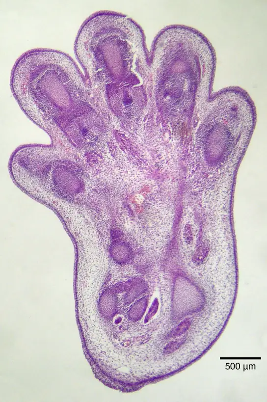
Termination of the Signal Cascade¶
The aberrant signaling often seen in tumor cells is proof that the termination of a signal at the appropriate time can be just as important as the initiation of a signal. One method of stopping a specific signal is to degrade the ligand or remove it so that it can no longer access its receptor. One reason that hydrophobic hormones like estrogen and testosterone trigger long-lasting events is because they bind carrier proteins. These proteins allow the insoluble molecules to be soluble in blood, but they also protect the hormones from degradation by circulating enzymes.
Inside the cell, many different enzymes reverse the cellular modifications that result from signaling cascades. For example, phosphatases are enzymes that remove the phosphate group attached to proteins by kinases in a process called dephosphorylation. Cyclic AMP (cAMP) is degraded into AMP by phosphodiesterase, and the release of calcium stores is reversed by the Ca2+ pumps that are located in the external and internal membranes of the cell.
9.4 Signaling in Single-Celled Organisms¶
Learning Objectives
By the end of this section, you will be able to do the following:
- Describe how single-celled yeasts use cell signaling to communicate with one another
- Relate the role of quorum sensing to the ability of some bacteria to form biofilms
Within-cell signaling allows bacteria to respond to environmental cues, such as nutrient levels. Some single-celled organisms also release molecules to signal to each other.
Signaling in Yeast¶
Yeasts are eukaryotes (fungi), and the components and processes found in yeast signals are similar to those of cell-surface receptor signals in multicellular organisms. Budding yeasts (Figure 9.16) are able to participate in a process that is similar to sexual reproduction that entails two haploid cells (cells with one-half the normal number of chromosomes) combining to form a diploid cell (a cell with two sets of each chromosome, which is what normal body cells contain). In order to find another haploid yeast cell that is prepared to mate, budding yeasts secrete a signaling molecule called mating factor. When mating factor binds to cell-surface receptors in other yeast cells that are nearby, they stop their normal growth cycles and initiate a cell signaling cascade that includes protein kinases and GTP-binding proteins that are similar to G-proteins.
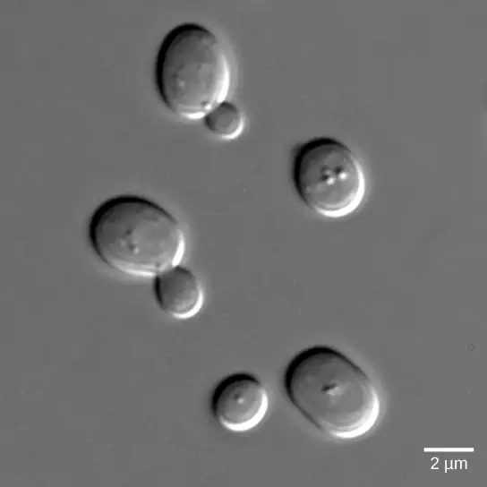
Signaling in Bacteria¶
Signaling in bacteria enables bacteria to monitor extracellular conditions, ensure that there are sufficient amounts of nutrients, and ensure that hazardous situations are avoided. There are circumstances, however, when bacteria communicate with each other.
The first evidence of bacterial communication was observed in a bacterium that has a symbiotic relationship with Hawaiian bobtail squid. When the population density of the bacteria reaches a certain level, specific gene expression is initiated, and the bacteria produce bioluminescent proteins that emit light. Because the number of cells present in the environment (cell density) is the determining factor for signaling, bacterial signaling was named quorum sensing. In politics and business, a quorum is the minimum number of members required to be present to vote on an issue.
Quorum sensing uses autoinducers as signaling molecules. Autoinducers are signaling molecules secreted by bacteria to communicate with other bacteria of the same kind. The secreted autoinducers can be small, hydrophobic molecules, such as acyl-homoserine lactone (AHL), or larger peptide-based molecules; each type of molecule has a different mode of action. When AHL enters target bacteria, it binds to transcription factors, which then switch gene expression on or off. When the number of bacteria increases so does the concentration of the autoinducer, triggering increased expression of certain genes including autoinducers, which results in a self-amplifying cycle, also known as a positive feedback loop (Figure 9.17). The peptide autoinducers stimulate more complicated signaling pathways that include bacterial kinases. The changes in bacteria following exposure to autoinducers can be quite extensive. The pathogenic bacterium Pseudomonas aeruginosa has 616 different genes that respond to autoinducers.
Some species of bacteria that use quorum sensing form biofilms, complex colonies of bacteria (often containing several species) that exchange chemical signals to coordinate the release of toxins that will attack the host. Bacterial biofilms (Figure 9.18) can sometimes be found on medical equipment; when biofilms invade implants such as hip or knee replacements or heart pacemakers, they can cause life-threatening infections.
Visual Connection
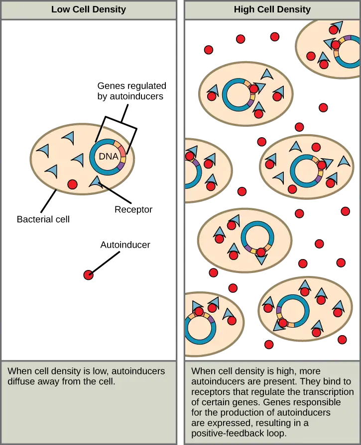
Which of the following statements about quorum sensing is false?
- Autoinducer must bind to receptor to turn on transcription of genes responsible for the production of more autoinducer.
- The receptor stays in the bacterial cell, but the autoinducer diffuses out.
- Autoinducer can only act on a different cell: it cannot act on the cell in which it is made.
- Autoinducer turns on genes that enable the bacteria to form a biofilm.
Visual Connection
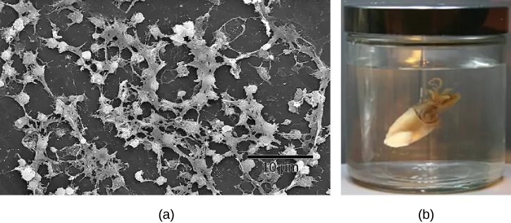
What advantage might biofilm production confer on the S. aureus inside the catheter?
Research on the details of quorum sensing has led to advances in growing bacteria for industrial purposes. Recent discoveries suggest that it may be possible to exploit bacterial signaling pathways to control bacterial growth; this process could replace or supplement antibiotics that are no longer effective in certain situations.
Interactive
Watch geneticist Bonnie Bassler discuss her discovery of quorum sensing in biofilm bacteria in squid.
Evolution Connection: Cellular Communication in Yeasts
The first cellular form of life on our planet likely consisted of single-celled prokaryotic organisms that had limited interaction with each other. While some external signaling occurs between different species of single-celled organisms, the majority of signaling within bacteria and yeasts concerns only other members of the same species. The evolution of cellular communication is an absolute necessity for the development of multicellular organisms, and this innovation is thought to have required approximately 2 billion years to appear in early life forms.
Yeasts are single-celled eukaryotes and, therefore, have a nucleus and organelles characteristic of more complex life forms. Comparisons of the genomes of yeasts, nematode worms, fruit flies, and humans illustrate the evolution of increasingly complex signaling systems that allow for the efficient inner workings that keep humans and other complex life forms functioning correctly.
Kinases are a major component of cellular communication, and studies of these enzymes illustrate the evolutionary connectivity of different species. Yeasts have 130 types of kinases. More complex organisms such as nematode worms and fruit flies have 454 and 239 kinases, respectively. Of the 130 kinase types in yeast, 97 belong to the 55 subfamilies of kinases that are found in other eukaryotic organisms. The only obvious deficiency seen in yeasts is the complete absence of tyrosine kinases. It is hypothesized that phosphorylation of tyrosine residues is needed to control the more sophisticated functions of development, differentiation, and cellular communication used in multicellular organisms.
Because yeasts contain many of the same classes of signaling proteins as humans, these organisms are ideal for studying signaling cascades. Yeasts multiply quickly and are much simpler organisms than humans or other multicellular animals. Therefore, the signaling cascades are also simpler and easier to study, although they contain similar counterparts to human signaling.2
Interactive
Watch this collection of interview clips with biofilm researchers in “What Are Bacterial Biofilms?”
bacteria_biofilm
Chapter Review¶
Key Terms¶
- apoptosis
- programmed cell death
- autocrine signal
- signal that is sent and received by the same or similar nearby cells
- autoinducer
- signaling molecule secreted by bacteria to communicate with other bacteria of its kind
- cell-surface receptor
- cell-surface protein that transmits a signal from the exterior of the cell to the interior, even though the ligand does not enter the cell
- chemical synapse
- small space between axon terminals and dendrites of nerve cells where neurotransmitters function
- cyclic AMP (cAMP)
- second messenger that is derived from ATP
- cyclic AMP-dependent kinase
- (also, protein kinase A, or PKA) kinase that is activated by binding to cAMP
- diacylglycerol (DAG)
- cleavage product of PIP2 that is used for signaling within the plasma membrane
- dimer
- chemical compound formed when two molecules join together
- dimerization
- (of receptor proteins) interaction of two receptor proteins to form a functional complex called a dimer
- endocrine cell
- cell that releases ligands involved in endocrine signaling (hormones)
- endocrine signal
- long-distance signal that is delivered by ligands (hormones) traveling through an organism's circulatory system from the signaling cell to the target cell
- enzyme-linked receptor
- cell-surface receptor with intracellular domains that are associated with membrane-bound enzymes
- extracellular domain
- region of a cell-surface receptor that is located on the cell surface
- G-protein-linked receptor
- cell-surface receptor that activates membrane-bound G-proteins to transmit a signal from the receptor to nearby membrane components
- growth factor
- ligand that binds to cell-surface receptors and stimulates cell growth
- inhibitor
- molecule that binds to a protein (usually an enzyme) and keeps it from functioning
- inositol phospholipid
- lipid present at small concentrations in the plasma membrane that is converted into a second messenger; it has inositol (a carbohydrate) as its hydrophilic head group
- inositol triphosphate (IP3)
- cleavage product of PIP2 that is used for signaling within the cell
- intercellular signaling
- communication between a cell
- internal receptor
- (also, intracellular receptor) receptor protein that is located in the cytosol of a cell and binds to ligands that pass through the plasma membrane
- intracellular mediator
- (also, second messenger) small molecule that transmits signals within a cell
- intracellular signaling
- communication within cells
- ion channel-linked receptor
- cell-surface receptor that forms a plasma membrane channel, which opens when a ligand binds to the extracellular domain (ligand-gated channels)
- kinase
- enzyme that catalyzes the transfer of a phosphate group from ATP to another molecule
- ligand
- molecule produced by a signaling cell that binds with a specific receptor, delivering a signal in the process
- mating factor
- signaling molecule secreted by yeast cells to communicate to nearby yeast cells that they are available to mate
- neurotransmitter
- chemical ligand that carries a signal from one nerve cell to the next
- paracrine signal
- signal between nearby cells that is delivered by ligands traveling in the liquid medium in the space between the cells
- phosphatase
- enzyme that removes the phosphate group from a molecule that has been previously phosphorylated
- phosphodiesterase
- enzyme that degrades cAMP, producing AMP, to terminate signaling
- quorum sensing
- method of cellular communication used by bacteria that informs them of the abundance of similar (or different) bacteria in the environment
- receptor
- protein in or on a target cell that bind to ligands
- second messenger
- small, non-protein molecule that propagates a signal within the cell after activation of a receptor causes its release
- signal integration
- interaction of signals from two or more different cell-surface receptors that merge to activate the same response in the cell
- signal transduction
- propagation of the signal through the cytoplasm (and sometimes also the nucleus) of the cell
- signaling cell
- cell that releases signal molecules that allow communication with another cell
- signaling pathway
- (also signaling cascade) chain of events that occurs in the cytoplasm of the cell to propagate the signal from the plasma membrane to produce a response
- synaptic signal
- chemical signal (neurotransmitter) that travels between nerve cells
- target cell
- cell that has a receptor for a signal or ligand from a signaling cell
Summary¶
9.1 Signaling Molecules and Cellular Receptors¶
Cells communicate by both inter- and intracellular signaling. Signaling cells secrete ligands that bind to target cells and initiate a chain of events within the target cell. The four categories of signaling in multicellular organisms are paracrine signaling, endocrine signaling, autocrine signaling, and direct signaling across gap junctions. Paracrine signaling takes place over short distances. Endocrine signals are carried long distances through the bloodstream by hormones, and autocrine signals are received by the same cell that sent the signal or other nearby cells of the same kind. Gap junctions allow small molecules, including signaling molecules, to flow between neighboring cells.
Internal receptors are found in the cell cytoplasm. Here, they bind ligand molecules that cross the plasma membrane; these receptor-ligand complexes move to the nucleus and interact directly with cellular DNA. Cell-surface receptors transmit a signal from outside the cell to the cytoplasm. Ion channel-linked receptors, when bound to their ligands, form a pore through the plasma membrane through which certain ions can pass. G-protein-linked receptors interact with a G-protein on the cytoplasmic side of the plasma membrane, promoting the exchange of bound GDP for GTP and interacting with other enzymes or ion channels to transmit a signal. Enzyme-linked receptors transmit a signal from outside the cell to an intracellular domain of a membrane-bound enzyme. Ligand binding causes activation of the enzyme. Small hydrophobic ligands (like steroids) are able to penetrate the plasma membrane and bind to internal receptors. Water-soluble hydrophilic ligands are unable to pass through the membrane; instead, they bind to cell-surface receptors, which transmit the signal to the inside of the cell.
9.2 Propagation of the Signal¶
Ligand binding to the receptor allows for signal transduction through the cell. The chain of events that conveys the signal through the cell is called a signaling pathway or cascade. Signaling pathways are often very complex because of the interplay between different proteins. A major component of cell signaling cascades is the phosphorylation of molecules by enzymes known as kinases. Phosphorylation adds a phosphate group to serine, threonine, and tyrosine residues in a protein, changing their shapes, and activating or inactivating the protein. Small molecules like nucleotides can also be phosphorylated. Second messengers are small, non-protein molecules that are used to transmit a signal within a cell. Some examples of second messengers are calcium ions (Ca2+), cyclic AMP (cAMP), diacylglycerol (DAG), and inositol triphosphate (IP3).
9.3 Response to the Signal¶
The initiation of a signaling pathway is a response to external stimuli. This response can take many different forms, including protein synthesis, a change in the cell’s metabolism, cell growth, or even cell death. Many pathways influence the cell by initiating gene expression, and the methods utilized are quite numerous. Some pathways activate enzymes that interact with DNA transcription factors. Others modify proteins and induce them to change their location in the cell. Depending on the status of the organism, cells can respond by storing energy as glycogen or fat, or making it available in the form of glucose. A signal transduction pathway allows muscle cells to respond to immediate requirements for energy in the form of glucose. Cell growth is almost always stimulated by external signals called growth factors. Uncontrolled cell growth leads to cancer, and mutations in the genes encoding protein components of signaling pathways are often found in tumor cells. Programmed cell death, or apoptosis, is important for removing damaged or unnecessary cells. The use of cellular signaling to organize the dismantling of a cell ensures that harmful molecules from the cytoplasm are not released into the spaces between cells, as they are in uncontrolled death, necrosis. Apoptosis also ensures the efficient recycling of the components of the dead cell. Termination of the cellular signaling cascade is very important so that the response to a signal is appropriate in both timing and intensity. Degradation of signaling molecules and dephosphorylation of phosphorylated intermediates of the pathway by phosphatases are two ways to terminate signals within the cell.
9.4 Signaling in Single-Celled Organisms¶
Yeasts and multicellular organisms have similar signaling mechanisms. Yeasts use cell-surface receptors and signaling cascades to communicate information on mating with other yeast cells. The signaling molecule secreted by yeasts is called mating factor.
Bacterial signaling is called quorum sensing. Bacteria secrete signaling molecules called autoinducers that are either small, hydrophobic molecules or peptide-based signals. The hydrophobic autoinducers, such as AHL, bind transcription factors and directly affect gene expression. The peptide-based molecules bind kinases and initiate signaling cascades in the cells.
Visual Connection Questions¶
9.1 Signaling Molecules and Cellular Receptors¶
1. Figure 9.8 HER2 is a receptor tyrosine kinase. In 30 percent of human breast cancers, HER2 is permanently activated, resulting in unregulated cell division. Lapatinib, a drug used to treat breast cancer, inhibits HER2 receptor tyrosine kinase autophosphorylation (the process by which the receptor adds phosphates onto itself), thus reducing tumor growth by 50 percent. Besides autophosphorylation, which of the following steps would be inhibited by Lapatinib?
- Signaling molecule binding, dimerization, and the downstream cellular response.
- Dimerization, and the downstream cellular response.
- The downstream cellular response.
- Phosphatase activity, dimerization, and the downsteam cellular response.
Answer
Figure 9.8 C. The downstream cellular response would be inhibited.
9.2 Propagation of the Signal¶
2. Figure 9.10 In certain cancers, the GTPase activity of the RAS G-protein is inhibited. This means that the RAS protein can no longer hydrolyze GTP into GDP. What effect would this have on downstream cellular events?
Answer
Figure 9.10 ERK would become permanently activated, resulting in cell proliferation, migration, adhesion, and the growth of new blood vessels. Apoptosis would be inhibited.
9.4 Signaling in Single-Celled Organisms¶
3. Figure 9.17 Which of the following statements about quorum sensing is false?
- Autoinducer must bind to receptor to turn on transcription of genes responsible for the production of more autoinducer.
- The receptor stays in the bacterial cell, but the autoinducer diffuses out.
- Autoinducer can only act on a different cell: it cannot act on the cell in which it is made.
- Autoinducer turns on genes that enable the bacteria to form a biofilm.
Answer
Figure 9.17 C.
4. Figure 9.18 What advantage might biofilm production confer on the S. aureus inside the catheter?
Answer
Figure 9.18 S. aureus produces a biofilm because the higher cell density in the biofilm permits the formation of a dense surface that helps protect the bacteria from antibiotics.
Review Questions¶
9.1 Signaling Molecules and Cellular Receptors¶
5. What property prevents the ligands of cell-surface receptors from entering the cell?
- The molecules bind to the extracellular domain.
- The molecules are hydrophilic and cannot penetrate the hydrophobic interior of the plasma membrane.
- The molecules are attached to transport proteins that deliver them through the bloodstream to target cells.
- The ligands are able to penetrate the membrane and directly influence gene expression upon receptor binding.
Answer
B
6. The secretion of hormones by the pituitary gland is an example of _______________.
- autocrine signaling
- paracrine signaling
- endocrine signaling
- direct signaling across gap junctions
Answer
C
7. Why are ion channels necessary to transport ions into or out of a cell?
- Ions are too large to diffuse through the membrane.
- Ions are charged particles and cannot diffuse through the hydrophobic interior of the membrane.
- Ions do not need ion channels to move through the membrane.
- Ions bind to carrier proteins in the bloodstream, which must be removed before transport into the cell.
Answer
B
8. Endocrine signals are transmitted more slowly than paracrine signals because ___________.
- the ligands are transported through the bloodstream and travel greater distances
- the target and signaling cells are close together
- the ligands are degraded rapidly
- the ligands don't bind to carrier proteins during transport
Answer
A
9. A scientist notices that when she adds a small, water-soluble molecule to a dish of cells, the cells turn off transcription of a gene. She hypothesizes that the ligand she added binds to a(n) ______ receptor.
- Intracellular
- Hormone
- Enzyme-linked
- Gated ion channel-linked
Answer
C
9.2 Propagation of the Signal¶
10. Where do DAG and IP3 originate?
- They are formed by phosphorylation of cAMP.
- They are ligands expressed by signaling cells.
- They are hormones that diffuse through the plasma membrane to stimulate protein production.
- They are the cleavage products of the inositol phospholipid, PIP2.
Answer
D
11. What property enables the residues of the amino acids serine, threonine, and tyrosine to be phosphorylated?
- They are polar.
- They are non-polar.
- They contain a hydroxyl group.
- They occur more frequently in the amino acid sequence of signaling proteins.
Answer
C
12. Histamine binds to the H1 G-protein-linked receptor to initiate the itchiness and airway constriction associated with an allergic response. If a mutation in the associated G-protein’s alpha subunit prevented the hydrolysis of GTP how would the allergic response change?
- More severe allergic response compared to normal G-protein signaling.
- Less severe allergic response compared to normal G-protein signaling.
- No allergic response.
- No change compared to normal G-protein signaling.
Answer
A
13. A scientist observes a mutation in the transmembrane region of EGFR that eliminates its ability to be stabilized by binding interactions during dimerization after ligand binding. Which hypothesis regarding the effect of this mutation on EGF signaling is most likely to be correct?
- EGF signaling cascades would be active for longer in the cell.
- EGF signaling cascades would be active for a shorter period of time in the cell.
- EGF signaling cascades would not occur.
- EGF signaling would be unaffected.
Answer
B
9.3 Response to the Signal¶
14. What is the function of a phosphatase?
- A phosphatase removes phosphorylated amino acids from proteins.
- A phosphatase removes the phosphate group from phosphorylated amino acid residues in a protein.
- A phosphatase phosphorylates serine, threonine, and tyrosine residues.
- A phosphatase degrades second messengers in the cell.
Answer
B
15. How does NF-κB induce gene expression?
- A small, hydrophobic ligand binds to NF-κB, activating it.
- Phosphorylation of the inhibitor Iκ-B dissociates the complex between it and NF-κB, and allows NF-κB to enter the nucleus and stimulate transcription.
- NF-κB is phosphorylated and is then free to enter the nucleus and bind DNA.
- NF-κB is a kinase that phosphorylates a transcription factor that binds DNA and promotes protein production.
Answer
B
16. Apoptosis can occur in a cell when the cell is ________________.
- damaged
- no longer needed
- infected by a virus
- all of the above
Answer
D
17. What is the effect of an inhibitor binding an enzyme?
- The enzyme is degraded.
- The enzyme is activated.
- The enzyme is inactivated.
- The complex is transported out of the cell.
Answer
C
18. How does PKC’s signaling role change in response to growth factor signaling versus an immune response?
- PKC interacts directly with signaling molecules in both cascades, but only exhibits kinase activity during growth factor signaling.
- PKC interacts directly with signaling molecules in growth factor cascades, but interacts with signaling inhibitors during immune signaling.
- PKC amplifies growth factor cascades, but turns off immune cascades.
- PKC is activated during growth factor cascades, but is inactivated during immune response cascades.
Answer
B
19. A scientist notices that a cancer cell line fails to die when they add an inducer of apoptosis to his culture of cells. Which hypothesis could explain why the cells fail to die?
- The cells have a mutation that prevents the initiation of apoptosis signaling.
- The cells have lost expression of the receptor for the apoptosis-inducing ligand.
- The cells overexpress a growth factor pathway that inhibits apoptosis.
- All of the above.
Answer
D
9.4 Signaling in Single-Celled Organisms¶
20. Which type of molecule acts as a signaling molecule in yeasts?
- steroid
- autoinducer
- mating factor
- second messenger
Answer
C
21. Quorum sensing is triggered to begin when ___________.
- treatment with antibiotics occurs
- bacteria release growth hormones
- bacterial protein expression is switched on
- a sufficient number of bacteria are present
Answer
D
22. A doctor is researching new ways to treat biofilms on artificial joints. Which approach would best help prevent bacterial colonization of the medical implants?
- Increase antibiotic dosing
- Create implants with rougher surfaces
- Vaccinate patients against all pathogenic bacteria
- Inhibit quorum sensing
Answer
D
Critical Thinking Questions¶
9.1 Signaling Molecules and Cellular Receptors¶
23. What is the difference between intracellular signaling and intercellular signaling?
Answer
Intracellular signaling occurs within a cell, and intercellular signaling occurs between cells.
24. How are the effects of paracrine signaling limited to an area near the signaling cells?
Answer
The secreted ligands are quickly removed by degradation or reabsorption into the cell so that they cannot travel far.
25. What are the differences between internal receptors and cell-surface receptors?
Answer
Internal receptors are located inside the cell, and their ligands enter the cell to bind the receptor. The complex formed by the internal receptor and the ligand then enters the nucleus and directly affects protein production by binding to the chromosomal DNA and initiating the making of mRNA that codes for proteins. Cell-surface receptors, however, are embedded in the plasma membrane, and their ligands do not enter the cell. Binding of the ligand to the cell-surface receptor initiates a cell signaling cascade and does not directly influence the making of proteins; however, it may involve the activation of intracellular proteins.
26. Cells grown in the laboratory are mixed with a dye molecule that is unable to pass through the plasma membrane. If a ligand is added to the cells, observations show that the dye enters the cells. What type of receptor did the ligand bind to on the cell surface?
Answer
An ion channel receptor opened up a pore in the membrane, which allowed the ionic dye to move into the cell.
27. Insulin is a hormone that regulates blood sugar by binding to its receptor, insulin receptor tyrosine kinase. How does insulin’s behavior differ from steroid hormone signaling, and what can you infer about its structure?
Answer
Insulin’s receptor is an enzyme-linked transmembrane receptor, as can be determined from the “tyrosine kinase” in its name. This receptor is embedded in the plasma membrane, and insulin binds to its extracellular (outer) surface to initiate intracellular signaling cascades.
Normally, steroid hormones cross the plasma membrane to bind with intracellular receptors. These intracellular hormone-receptor complexes then interact directly with DNA to regulate transcription. This limits steroid hormones to be small, non-polar molecules so they can cross the plasma membrane. However, since insulin does not have to cross into the cell it could be large or polar (it is a small, polar molecule).
9.2 Propagation of the Signal¶
28. The same second messengers are used in many different cells, but the response to second messengers is different in each cell. How is this possible?
Answer
Different cells produce different proteins, including cell-surface receptors and signaling pathway components. Therefore, they respond to different ligands, and the second messengers activate different pathways. Signal integration can also change the end result of signaling.
29. What would happen if the intracellular domain of a cell-surface receptor was switched with the domain from another receptor?
Answer
The binding of the ligand to the extracellular domain would activate the pathway normally activated by the receptor donating the intracellular domain.
30. If a cell developed a mutation in its MAP2K1 gene (encodes the MEK protein) that prevented MEK from being recognized by phosphatases, how would the EGFR signaling cascade and the cell’s behavior change?
Answer
EGF binding to EGFR initiates a signaling cascade that activates protein kinases through phosphorylation. Active Raf phosphorylates MEK, activating MEK’s kinase activity. If MEK cannot be dephosphorylated, the signaling cascade downstream of MEK will continue to be active after the EGF signal is gone. Therefore, the cell will continue to proliferate and be resistant to cell death (apoptosis).
9.3 Response to the Signal¶
31. What is a possible result of a mutation in a kinase that controls a pathway that stimulates cell growth?
Answer
If a kinase is mutated so that it is always activated, it will continuously signal through the pathway and lead to uncontrolled growth and possibly cancer. If a kinase is mutated so that it cannot function, the cell will not respond to ligand binding.
32. How does the extracellular matrix control the growth of cells?
Answer
Receptors on the cell surface must be in contact with the extracellular matrix in order to receive positive signals that allow the cell to live. If the receptors are not activated by binding, the cell will undergo apoptosis. This ensures that cells are in the correct place in the body and helps to prevent invasive cell growth as occurs in metastasis in cancer.
33. A scientist notices that a cancer cell line shows high levels of phosphorylated ERK in the absence of EGF. What are two possible explanations for the increase in phosphorylated ERK? Be specific in which proteins are involved.
Answer
Possible explanations:
- EGFR dimer cannot separate.
- An upstream mutation (in Ras, Raf, MEK) constitutively activates the signaling cascade.
- ERK has a mutation that prevents it from binding to its phosphatase.
- The cell has a mutation preventing the expression or function of the ERK-specific phosphatase.
9.4 Signaling in Single-Celled Organisms¶
34. What characteristics make yeasts a good model for learning about signaling in humans?
Answer
Yeasts are eukaryotes and have many of the same systems that humans do; however, they are single-celled, so they are easy to grow, grow rapidly, have a short generation time, and are much simpler than humans.
35. Why is signaling in multicellular organisms more complicated than signaling in single-celled organisms?
Answer
Multicellular organisms must coordinate many different events in different cell types that may be very distant from each other. Single-celled organisms are only concerned with their immediate environment and the presence of other cells in the area.
36. Pseudomonas infections are very common in hospital settings. Why would it be important for doctors to determine the bacterial load before treating an infected patient?
Answer
Doctors would need to determine if the patient is simply infected with free bacteria, or has developed a biofilm. Biofilms of Pseudomonas aeruginosa have a different pattern of gene expression than free bacteria, leading to increased virulence and resistance to many antibiotics.
Adapted from Biology 2e by OpenStax, licensed under CC BY 4.0. Access the original for free at openstax.org. Changes: converted to the web reading format of The Open Book Project.
-
A. B. Sigalov, The School of Nature. IV. Learning from Viruses, Self/Nonself 1, no. 4 (2010): 282-298. Y. Cao, X. Koh, L. Dong, X. Du, A. Wu, X. Ding, H. Deng, Y. Shu, J. Chen, T. Jiang, Rapid Estimation of Binding Activity of Influenza Virus Hemagglutinin to Human and Avian Receptors, PLoS One 6, no. 4 (2011): e18664. ↩
-
G. Manning, G.D. Plowman, T. Hunter, S. Sudarsanam, “Evolution of Protein Kinase Signaling from Yeast to Man,” Trends in Biochemical Sciences 27, no. 10 (2002): 514–520. ↩